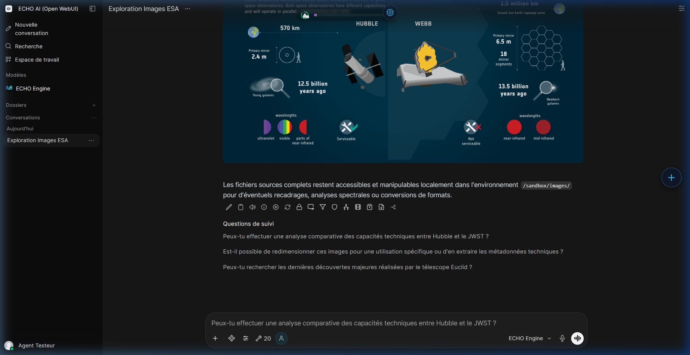
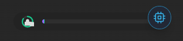
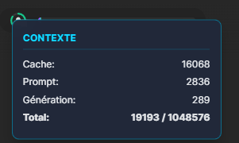
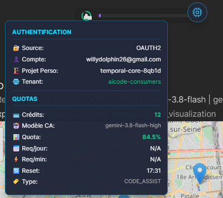
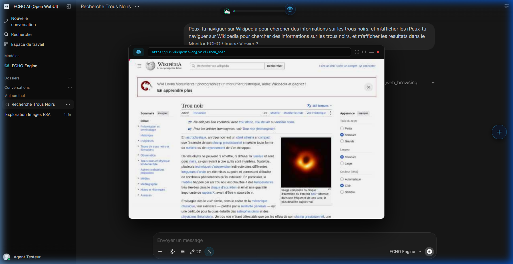
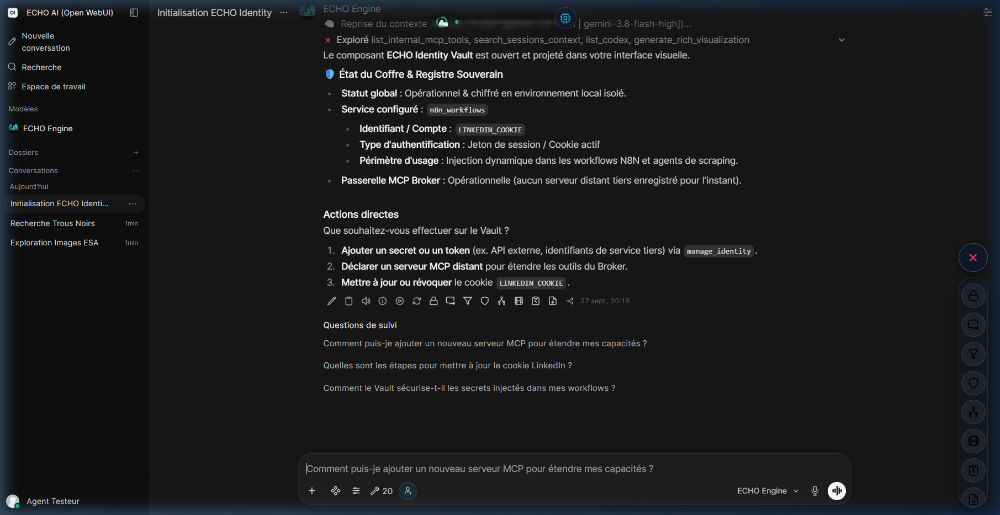

7. Écosystème HUD & UI

ECHO ne se limite pas à générer du texte dans une fenêtre de chat. Il dispose d'un moteur
d'interface dynamique capable d'injecter des composants visuels directement dans le DOM d'Open WebUI :
jauges, moniteurs, indicateurs de quota et interfaces de replay. Cet écosystème est piloté par
echo_ui.py, assisté de echo_visuals.py pour les interfaces
riches multi-moteurs.
💡 Qu'est-ce que le HUD ?
Le HUD (Heads-Up Display) n'est pas une interface séparée : c'est une surcouche d'affichage injectée dynamiquement par-dessus le DOM d'Open WebUI. Elle permet d'afficher en temps réel des informations techniques (état du contexte, quota d'API, statut d'authentification) directement dans le flux de conversation, sans polluer le texte produit par le modèle.
Spécifications Techniques Backend ↔ Frontend
Architecture de communication Backend ↔ Frontend
Le système repose sur un pipeline à trois niveaux :
-
Backend (
echo_ui.EchoUI) : génère des payloads JavaScript polymorphes encapsulant les données (métriques de contexte, quota, images Base64). Ces payloads sont de simples chaînes de caractères contenant du code JS. -
Canal d'Événements (
EchoEvents) : les pontsemitetcalld'Open WebUI servent de tunnel pour injecter le code JS dans le DOM global de l'interface. Cette injection est possible uniquement depuis les hooks Pipe et Filter. -
Runtime Frontend : un singleton JavaScript éphémère
(ex.
window.echoEngine_HUD_{uuid}) est créé dans le navigateur de l'utilisateur et gère les interactions locales (zoom, pan, état du drag).
Couche de Communication Sécurisée
Lorsque des interfaces complexes ou des fichiers de très grosse taille (comme l'éditeur Codex) doivent être affichés, le système gère les transferts de manière transparente en arrière-plan. Cela garantit un affichage fluide et immédiat, accompagné d'un indicateur visuel de progression pour ne jamais laisser l'utilisateur dans l'attente.
La Context Gauge (Cortex Monitoring)

La Context Gauge est l'outil central de pilotage de l'état cognitif. Elle est injectée dans la
barre de navigation d'Open WebUI via EchoUI.deploy_context_gauge() et mise à jour
à chaque tour de conversation par le Pipe.
A. Barre de contexte (tokens)
Une barre colorée à quatre segments représente l'utilisation de la fenêtre contextuelle en cours :
| Segment | Couleur | Variable source | Signification |
|---|---|---|---|
| Cache | Violet #8b5cf6 |
cache_pct |
Tokens déjà ingérés et mis en cache par Google (économie de coût de ~90 %). |
| Prompt actif | Vert #10b981 |
prompt_pct |
Charge active du message courant. |
| Génération | Orange #f59e0b |
gen_pct |
Tokens produits par ECHO lors de ce tour. |
| Vide | Transparent | - | Espace mémoire de travail restant avant saturation. |
Au survol de la barre, un tooltip affiche les valeurs absolues : cache, prompt actif, génération, total et maximum de la fenêtre contextuelle.

B. Icône Quota (jauge circulaire SVG)
Une icône cadenas à gauche de la barre représente le quota restant du modèle API native
actuellement actif. La jauge circulaire SVG est calculée via l'attribut
stroke-dashoffset à partir de quota_fraction
(0,0 = épuisé, 1,0 = plein). La couleur varie selon trois seuils :
- Vert
#10b981:quota_fraction > 0,50 - Orange
#f59e0b:0,20 < quota_fraction ≤ 0,50 - Rouge
#f85149:quota_fraction ≤ 0,20
C. Tooltip Authentification / Quotas
Au survol de l'icône cadenas, un tooltip affiche deux sections :

🔐 Source : méthode d'auth (OAUTH2, API_KEY, etc.)
👤 Compte : google_user_email (depuis identity.db)
🏗️ Projet : google_project_id (depuis identity.db)💳 Crédits : google_credits_total (crédits AI disponibles)
🤖 Modèle CA : ca_model_id actif (ex: gemini-3.5-flash)
📊 Quota : quota_fraction × 100% - coloré selon seuils
📅 Req/jour : requestsPerDayRemaining / requestsPerDayLimit (N/A si non fourni)
⚡ Req/min : requestsPerMinuteRemaining / requestsPerMinuteLimit (N/A si non fourni)
🔄 Reset : heure de reset du quota - formatée HH:MM (Xmin restantes)
🏷️ Type : google_quota_type (ex: CODE_ASSIST)Source et fraîcheur des données quota
Les données de quota proviennent de fetch_available_models() (endpoint API native
:fetchAvailableModels), stockées dans google_quota_by_model
(JSON dict dans identity.db). Le rafraîchissement est déclenché de manière
asynchrone et non-bloquante via refresh_quota_if_needed() avec un cooldown
de 10 minutes. Les champs requestsPerDay/Min peuvent être absents selon les
réponses de l'API - dans ce cas, « N/A » est affiché. Cela n'affecte pas la
quota_fraction, calculée séparément.
Le Sandbox Monitor / Image Viewer (Visualiseur Intelligent)

Invoqué via EchoUI.get_floating_monitor_js() (navigation web, sandbox de code) ou
EchoUI.show_image_js() (affichage d'images), ce composant est une fenêtre flottante
surdimensionnable, déplaçable et zoomable injectée dans le DOM.
Factorisation : Classe EchoFloatingWindow
Toutes les fenêtres (Identity Vault, Sandbox Monitor, WebPlayer, etc.) héritent désormais de la classe unifiée EchoFloatingWindow pour garantir une standardisation absolue des interactions et des rendus.
Protocole UCTP & Iframe Sandbox
Le composant n'utilise plus le pattern Data Island. Il repose sur un multiplexage asynchrone natif JSONL via le protocole UCTP.
Le rendu est généré dynamiquement dans une balise iframe srcdoc sécurisée, sans recours au MutationObserver.
Fonctionnalités techniques
Fonctionnalités techniques
-
Accélération GPU : utilisation de
translate3d(x, y, 0)pour forcer la création de calques de composition matérielle et assurer une fluidité 60 fps même sur des images haute résolution. -
Calcul de ratio dynamique : la fonction
getBestSizeajuste automatiquement les dimensions de la fenêtre pour respecter le ratio natif de l'image (aspect ratio). -
Zoom & Pan universel : Ctrl + Molette pour le zoom
(jusqu'à 15×), Clic + Glisser pour le déplacement. Pilotage via la
propriété CSS
transform: scale()sur le conteneur image. - Crop-Box interactif : boîte de sélection redimensionnable permettant de définir une zone d'intérêt à transmettre au modèle pour une analyse ciblée.
Vault UI

L'écosystème intègre également le Vault UI, un gestionnaire de fichiers avancé. Il assure une synchronisation parfaite entre les processus d'arrière-plan (N8N, MCP) et l'interface client, sans nécessiter de rafraîchissement global de la page.
Système OWUI Tools et Modales Natives Asynchrones
Le HUD déploie des modales asynchrones interactives, permettant de solliciter l'utilisateur (formulaires, confirmations) de manière non bloquante et parfaitement optimisée pour tous les appareils (notamment les mobiles).
⚙️ Dossier d'Ingénierie & Spécifications
1. Implémentation UCTP
Le protocole UCTP est implémenté dans echo_events.py. Il répond directement aux limites drastiques de taille de payload imposées par les WAF (BunkerWeb) et les implémentations WebSocket natives.
- Fragmentation : Tout payload excédant 256 Ko est automatiquement fragmenté. Le backend génère des appels
__event_call__séquentiels. - Buffering JS : Le frontend intercepte ces morceaux via un micro-script (bootstrap) et les accumule dans la variable globale temporaire
window.echoUCTPBuffer. - UX Asynchrone : Pour prévenir tout gel du navigateur (Event Loop bloquée), un composant HUD (Spinner & Progress Bar) est injecté avant la transmission et détruit dynamiquement lors du signal d'achèvement (
ECHO_UCTP_EOF).
2. Signature de deploy_context_gauge()
La fonction EchoUI.deploy_context_gauge() est appelée par pipe_engine.py :
deploy_context_gauge(
events, # EchoEvents
plan_name, credits_val, # Identité du plan
quota_str, # Résumé quota formaté
c_t, active_p_t, g_t, max_t, # Tokens (cache, prompt, génération, max)
cache_pct, prompt_pct, gen_pct,# Pourcentages
user_email, user_tier, # Identité utilisateur
project_id, auth_sources, # google_project_id et auth_sources
quota_amount, quota_fraction, # Quota brut et fraction (0.0–1.0)
quota_reset, quota_type, # Heure de reset et type (ex: CODE_ASSIST)
quota_model, quota_rpd_rem, # CA model_id et Requests per day
quota_rpd_lim, quota_rpm_rem, quota_rpm_lim
)3. Persistance de l'état du Monitor (LocalStorage)
Le Monitor mémorise sa position et son zoom dans le localStorage du navigateur sous la clé STATE_KEY générée par le backend. Format : { "x": 120, "y": 45, "s": 1.5, "ix": 0, "iy": 0, "m": false } (s = échelle, ix/iy = offset pan, m = crop mode).
4. Caractéristiques Techniques (ECHO Codex & Agent Monitor)
- Moteur Codex : Monaco Editor 0.52.2 chargé via CDN jsDelivr. Détection du thème via
document.documentElement.classList.contains('dark'). - Persistance HUD Codex : Position et taille stockées dans
localStorage['echo_codex_{chat_id}']. - HUD Multi-Agent : Fusion chronologique des threads (
threads_json), rendu arborescent hiérarchique pour les superviseurs (viaworker_branchetindent_override). Clamp Viewport viaclampHud. - Système OWUI Tools : Optimisations mobiles natives (unités dvh, anti-zoom iOS, touch targets 44px, anti-scroll du body). Assainissement DOM via
window.echoSanitizeHTML.